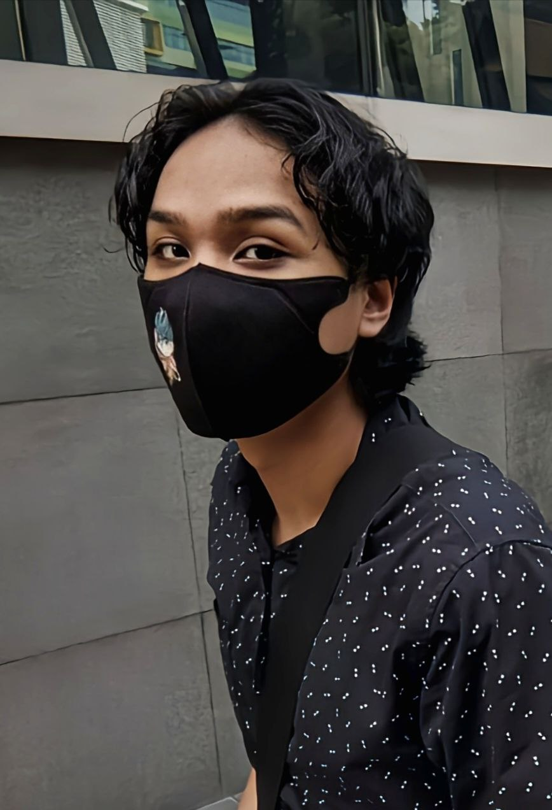

Home
Family
Hobbies
Education
Food
Games
Artist
ABOUT ME

Birth: 7th of March 2004
An only child
Lives in Cheras, Kuala Lumpur
Glass half full kinda guy
Eat like 'bela saka'
Hated coding when first started, hate it less now
"Value yourself for who you are now"